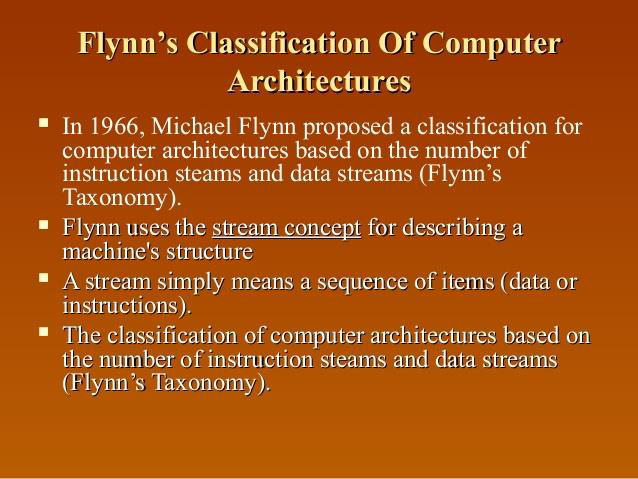

Computer Architecture
Links:
Home Page
in computer engineering, computer architecture is a set of rules and methods that describe the functionality, organization, and implementation of computer systems. Some definitions of architecture define it as describing the capabilities and programming model of a computer but not an implementation
computer architecture in general. This is applicable to both embedded and desktop computers, because the primary difference between an embedded machine and a general-purpose computer is its application. The basic principles of operation and the underlying architectures are fundamentally the same
